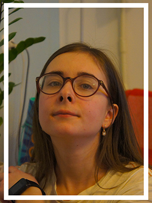
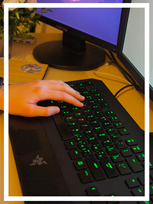

Анна Чередниченко
Привет! Давайте знакомиться. Меня зовут Аня, мне 22 года, я живу в Йошкар-Оле.
Я люблю программировать, рисовать, играть в компьютерные игры, читать, изучать иностранные языки, переводить тексты, путешествовать, фотографировать, а ещё эксперементировать и учиться новому.
Я знаю три иностранных языка: польский, английский и украинский. В свободное время я изучаю веб-программирование. Например, своё портфолио я создала сама.
Всему я научилась сама. Мне очень нравится делать то, что будет полезно людям. После конца рабочего дня моя работа не заканчивается, я все вечера трачу на хобби и изучение нового.
Я очень люблю Россию. Моя мечта - побывать во всех уголках нашей страны. Я уже побывала в Москве, Нижнем Новгороде, Городце, Казани, Чебоксарах, Ульяновске и Екатеринбурге. Из каждого города я привезла дощечку с народной росписью.
Я забочусь об экологии: сортирую мусор, не покупаю новые вещи, не использую пластик и ухаживаю за растениями.